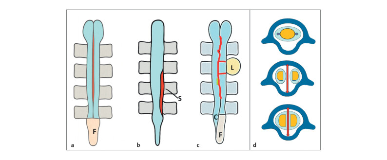
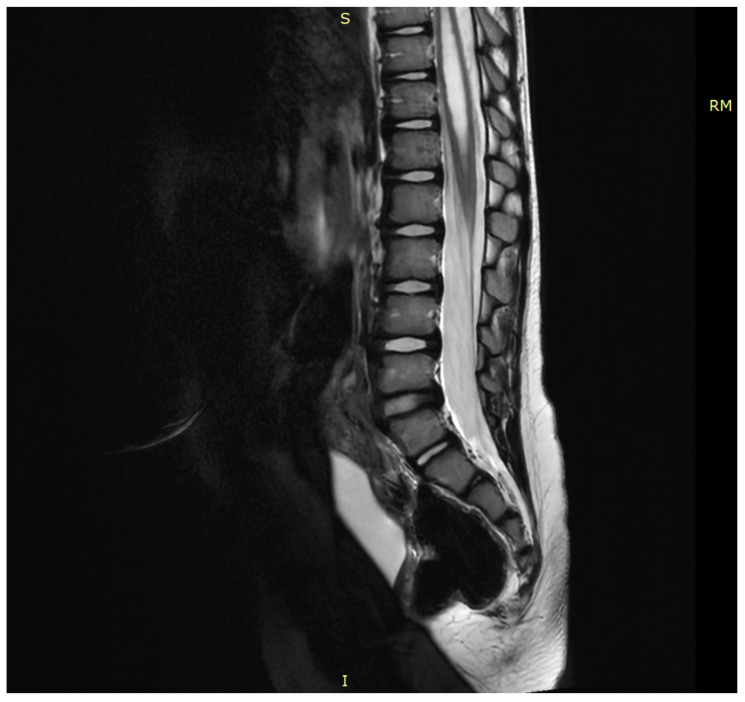
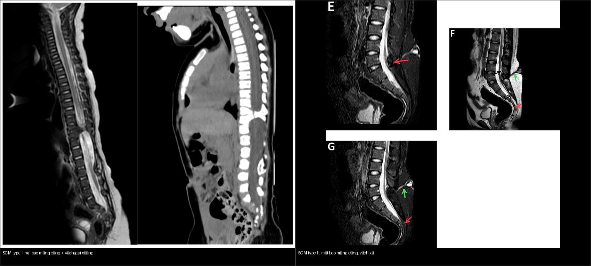
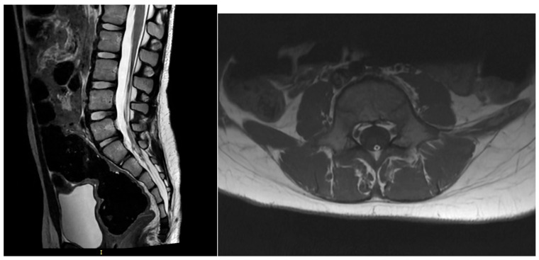
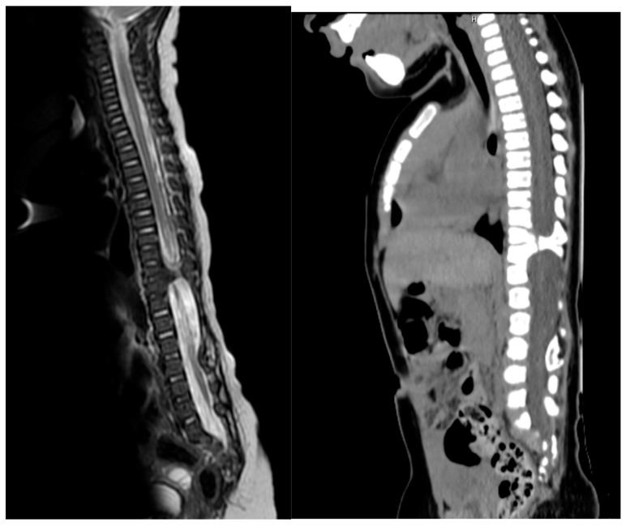
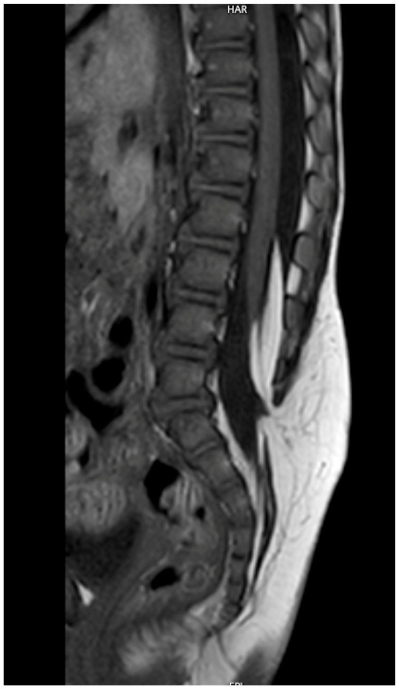
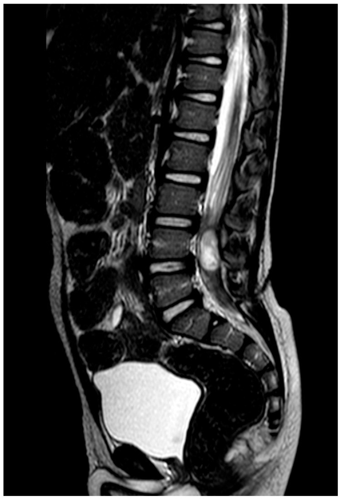

656 — Bất thường tủy–cột sống kín ở trẻ: dị tật đôi tủy, tủy căng, u mỡ & đường rò da / Closed spinal dysraphism
Tags: pattern:di-dang-tuy-cot-song vung:tuy-cot-song-nhi score:Orphanet-SBoD protocol:MRI-cot-song-toan-bo incidentaloma:u-mo-tuy
Mức chắc chắn (certainty): tổng hợp y văn (literature synthesis) — tổng hợp từ bài tổng quan điều trị tủy căng (Lampros M et al., Children 2026, PMC13114283), bài luận ảnh dị tật đôi tủy (Borthakur K et al., Ultrasound Int Open 2026, PMC13077585), ca diastematomyelia type II (Thapa S et al., Radiol Case Rep 2025, PMC12546449) và phân loại Orphanet SBoD 2025 (PMC12239321).
1. Tổng quan bệnh học – cơ chế hình ảnh
- Dị tật ống thần kinh (neural tube defect) chia mở (spina bifida aperta) — tủy hở ra ngoài da (myelomeningocele) — và kín (spina bifida occulta / closed spinal dysraphism) — da nguyên vẹn, tổn thương ẩn dưới da. Dạng kín sinh ra từ bất thường tạo tủy thứ cấp (secondary neurulation) nên rất dễ bỏ sót trên lâm sàng: trẻ chỉ có một dấu hiệu da ở vùng cùng cụt (nốt ruồi lông, hố lõm, nốt/phần da phụ, đường rò nhỏ) mà không liệt.
- Tủy căng (tethered cord syndrome — TCS) là hậu quả chung: tủy dính vào cấu trúc không đàn hồi (dây tận cùng dày/mỡ, vách sụn-xương của dị tật đôi tủy, u mỡ, đường rò) nên không “leo lên” theo cột sống khi trẻ lớn. Triệu chứng thường xuất hiện vào đợt tăng trưởng (5–6 tuổi): co cứng chi dưới, biến dạng bàn chân, rối loạn cơ vòng, đau chi dưới/vùng hậu môn.
- Ngưỡng định lượng then chốt (giải phẫu di chuyển theo tuổi — TẠI SAO phải đọc tầng): bình thường chóp tủy (conus medullaris) ở L3 lúc sinh rồi “leo” lên L1–L2 ở người lớn; TCS khi chóp tủy nằm dưới L2. Vì vậy một chóp tủy ở đúng L2 là giới hạn — không tự kết luận bệnh nếu không có triệu chứng (xem mục 5).
- TẠI SAO tín hiệu như vậy? Trên T1W: mô mỡ (lipoma, dây tận cùng mỡ) luôn sáng (T1 ngắn, tương phản với tủy xám trung gian) — đây là “đèn báo” u mỡ/dây mỡ. Trên T2W: dịch não tủy (CSF) trong bao màng cứng sáng rực nên dễ nhận diện chóp tủy tận cùng ở đâu, có/không vách chia đôi, và ống tủy rỗng (syringomyelia). Vách xơ (mô sợi/collagen) tối trên mọi chuỗi; gai xương/sụn của type I thấy rõ trên CT (đậm độ xương) và cũng tối trên MRI.
- Phân độ dị tật đôi tủy (split cord malformation — SCM) theo Pang: type I — hai bao màng cứng riêng biệt, mỗi nửa tủy có bao riêng, chia cách bởi vách/gai xương-sụn cứng; type II — một bao màng cứng duy nhất, một nửa tủy nằm trong một bao, chia bởi vách xơ mềm; type III — tủy bị chia cả dọc và ngang nhiều tầng (hiếm).


2. Mẫu hình + chẩn đoán phân biệt theo vị trí & loại (gamut)
- Theo dấu hiệu da vùng thắt lưng-cùng: hố lõm cùng cụt (sacral dimple) đơn thuần (lành), nốt lông/búi lông (hair patch), nốt dưới da mềm (u mỡ), lỗ nhỏ chảy dịch (đường rò da — dermal sinus), phần da/tổ chức phụ lạ (ectopic tissue). Mọi dấu hiệu da nằm trên nếp mông (gluteal cleft) hoặc có nhiều dấu hiệu cùng lúc → chỉ định MRI tủy.
- Dị tật đôi tủy (SCM / diastematomyelia): đau lưng, yếu chi dưới, bàn chân khoèo một bên, đôi khi hội chứng tủy đôi bán phần. Type I thường có gai xương kèm vẹo cột sống bẩm sinh; type II thường đơn độc.
- Tủy căng [do] dây tận cùng dày/mỡ (tight/fatty filum): đau/co cứng chi dưới, rối loạn cơ vòng, chóp tủy thấp; dây tận cùng > 2 mm và T1 sáng (mỡ) là chỉ điểm.
- U mỡ tủy (spinal cord lipoma): u mỡ dính vào tủy (conus lipoma), hay gặp lipomyelocele/lipomyelomeningocele (u mỡ chạy từ dưới da qua khe cung sau vào trong tủy) — T1 sáng đặc trưng, gây dính.
- Đường rò da (dorsal dermal sinus tract): đường hầm từ da vào ống sống, có thể kèm nang bì/nang biểu bì (dermoid/epidermoid) và viêm màng não tái diễn — là cấp cứu nhiễm trùng nếu viêm.
- Ống tủy rỗng (syringomyelia/hydromyelia): khoang dịch T2 sáng ở trung tâm tủy, thường thứ phát sau tủy căng/Chiari; không phải nguyên nhân chính mà là hậu quả cần đi kèm.
- Nhóm hiếm khác: nang ruột thần kinh (neurenteric cyst), myelocele thể tận (terminal myelocystocele — “trumpet conus”), hội chứng thoái triển cùng (caudal regression).
3. Bảng so sánh phân biệt (ma trận đối chiếu)
| Thực thể (entity) | Hình ảnh điển hình (MRI T1/T2) | Chốt vào (rule-in) | Chốt loại (rule-out) | Gợi ý xác nhận |
|---|---|---|---|---|
| Dị tật đôi tủy type I (SCM I) | Hai bao màng cứng, gai/vách xương-sụn giữa hai nửa tủy; tủy căng | Hai bao màng cứng riêng + vách xương/sụn (thấy trên CT) | Một bao màng cứng duy nhất → type II | MRI T2 axial/sagittal + CT xương; cắt vách giải ép |
| Dị tật đôi tủy type II (SCM II) | Một bao màng cứng, vách xơ mềm chia đôi tủy | Một bao màng cứng + vách sợi tối trên mọi chuỗi | Thấy gai xương → type I | MRI ± CT để loại gai xương ẩn |
| Tủy căng do dây tận cùng dày/mỡ (tight/fatty filum) | Chóp tủy dưới L2; dây tận cùng dày > 2 mm, T1 sáng nếu mỡ | Chóp tủy thấp < L2 + dây > 2 mm/T1 sáng | Chóp tủy tại L1–L2, dây mảnh < 2 mm, không triệu chứng → không cần mổ | MRI T1/T2 sagittal + axial; điều trị khi có triệu chứng |
| U mỡ tủy (conus/lipomyelomeningocele lipoma) | Khối T1 sáng như mỡ, T2 tăng vừa; dính tủy, có thể có thành phần dưới da | Khối mỡ đồng tín hiệu mỡ từ dưới da vào ống sống | Khối T1 tối → không phải mỡ (u khác) | MRI T1 (bão hòa mỡ), đánh giá khe cung sau |
| Đường rò da (dermal sinus) | Đường hầm tín hiệu thấp/thấy rõ từ da vào ống sống; ± nang bì | Đường hầm da → ống sống (một đầu ở da) | Hố lõm nông, đáy trên mạc → chỉ theo dõi | MRI T1/T2; cắt sớm để tránh viêm màng não |
| Ống tủy rỗng (syringomyelia) | Khoang dịch T2 sáng, tín hiệu như CSF, trong tủy | Khoang dịch trung tâm tủy đồng tín hiệu CSF | Nang u có thành ngấm thuốc → nghĩ u | MRI toàn bộ tủy tìm nguyên nhân (Chiari/tủy căng) |

Bấm để hiện đáp án (nhãn bệnh trong ảnh ghép)
- Trái (type I): MRI T2 + CT dọc cho thấy hai bao màng cứng tách bởi gai xương — dấu hiệu chốt type I. Nguồn: Lampros M et al., Children 2026 (PMC13114283, Fig. 4), CC BY.
- Phải (type II): MRI T2 axial + STIR dọc cho thấy một bao màng cứng với vách xơ chia đôi tủy, kèm u mỡ và tủy bám thấp. Nguồn: Thapa S et al., Radiol Case Rep 2025 (PMC12546449, Fig. 1), CC BY.
4. Protocol chụp + hệ phân loại chuẩn hóa
- Protocol MRI tủy sống toàn bộ (whole-spine MRI): T2W dọc (sagittal) và ngang (axial), T1W dọc + ngang, không cần tiêm thuốc cản quang thường quy; bổ sung CT xương khi nghi gai xương (type I) hoặc xẹo vẹo cột sống bẩm sinh. Ở trẻ nhũ nhi, siêu âm tủy (thóp/qua khe cung sau chưa cốt hóa) là bước sàng lọc đầu tay hữu ích.
- Chỉ định chụp: mọi dấu hiệu da bất thường vùng thắt lưng-cùng (hố lõm sâu/cao, nốt lông, phần da phụ, lỗ rò), yếu/teo chi dưới không giải thích, rối loạn cơ vòng ở trẻ, bàn chân khoèo một bên, hoặc vẹo cột sống bẩm sinh.
- Phân loại Orphanet SBoD (Spina Bifida and other Dysraphisms) sửa đổi 2025 (ORPHA:823): giữ đối lập mở/kín, chuẩn hóa 16 dấu hiệu da – 7 dấu hiệu xương – 33 dấu hiệu tủy, được kiểm định trên các thể u mỡ chóp tủy (conus lipoma), đường rò da, dị tật đôi tủy (diastematomyelia), u mỡ dây tận cùng (filum lipoma), myelomeningocele, lipomyelomeningocele, myelocele-thể tận và nang ruột thần kinh.
- Ngưỡng số chốt: chóp tủy dưới L2 = tủy căng; dây tận cùng > 2 mm = dày; 70% trẻ myelomeningocele có tủy căng trên phim nhưng chỉ 20–30% thành triệu chứng; biến chứng rò dịch não tủy sau mổ 5–15%.
- Sơ đồ tiếp cận dấu hiệu da vùng cùng cụt:
flowchart TD
A[Dấu hiệu da vùng thắt lưng-cùng] --> B{Đơn độc, hố lõm nông, đáy trên mạc?}
B -->|Có| C[Theo dõi, không cần chụp ngay]
B -->|Không| D[Siêu âm tủy ở nhũ nhi hoặc MRI tủy toàn bộ]
D --> E{Chóp tủy dưới L2?}
E -->|Không| F{Thấy khối T1 sáng mỡ, đường hầm da, vách chia tủy?}
E -->|Có| G[Tủy căng]
F -->|Có| H[U mỡ / đường rò / dị tật đôi tủy]
F -->|Không| C
G --> I{Có triệu chứng?}
I -->|Có| J[Tháo căng dây tận cùng]
I -->|Không| K[Theo dõi định kỳ]
5. Biến thể bình thường và cạm bẫy
- Chóp tủy tại L1–L2 ở trẻ lớn và người lớn là bình thường — không được gọi tủy căng chỉ vì “chóp tủy hơi thấp”. Tủy căng cần chóp dưới L2 cộng bối cảnh/triệu chứng (nguồn nhấn mạnh: “không có chẩn đoán rõ ràng thì không chỉ định tháo căng”).
- Dây tận cùng mỡ (fatty filum) là cạm bẫy hai chiều: một dây mỡ mảnh, không triệu chứng có thể chỉ theo dõi; nhưng dây > 2 mm, T1 sáng rõ kèm triệu chứng thì cần can thiệp. Đừng nhầm điểm sáng T1 của mỡ với xuất huyết dưới màng cứng (T1 sáng nhưng bối cảnh chấn thương).
- Hố lõm cùng cụt đơn độc (đáy trên mạc, không cách xa hậu môn) thường lành. Ngược lại, nhiều dấu hiệu da cùng lúc, hố lõm cao/sâu, hoặc lệch trên nếp mông → phải chụp.
- Ảnh giả/dễ bỏ sót: dị tật đôi tủy có thể bị đọc nhầm là “tủy đôi do lát cắt xiên” — luôn khẳng định bằng nhiều lát cắt liên tiếp và tìm vách; đường rò da rất mảnh có thể không thấy trên lát 3–4 mm → dùng lát mỏng 1–2 mm.
- Thỏa mãn tìm kiếm (satisfaction of search) là bẫy lớn: thấy u mỡ là dừng lại, bỏ sót vách chia tủy hoặc ống tủy rỗng kèm theo → đọc toàn bộ trục tủy.

6. Tự lượng giá — Blind Quiz
Ca 1 — Trẻ đau lưng tăng dần, yếu chi dưới. Đọc MRI T2 + CT dọc.

- Gợi ý lâm sàng: đau/yếu chi dưới tiến triển.
- Câu hỏi: Tủy có bị chia không? Kiểu dị tật? Có gai xương không và type I hay II?
Bấm để hiện đáp án (findings + chẩn đoán)
- Dấu hiệu (findings): tủy bị chia đôi, giữa hai nửa có gai xương (thấy rõ trên CT dọc) tạo hai bao màng cứng riêng; tủy bám thấp gây căng.
- Chẩn đoán (diagnosis): dị tật đôi tủy type I (SCM type I) — vách cứng gây cố định tủy. Điều trị: tháo vách + tháo căng khi có triệu chứng.
- Nguồn ảnh: Lampros M et al., Children 2026 (PMC13114283, Fig. 4), CC BY.
Ca 2 — Trẻ có khối mềm vùng cùng cụt từ nhỏ. Đọc MRI T1 dọc.

- Gợi ý lâm sàng: khối dưới da mềm, không đau, da phủ bình thường.
- Câu hỏi: Tín hiệu khối là gì? Khối đi từ đâu tới đâu? Chẩn đoán?
Bấm để hiện đáp án (findings + chẩn đoán)
- Dấu hiệu (findings): khối T1 sáng như mỡ chạy từ dưới da qua khe cung sau vào ống sống và dính vào tủy — lipomyelocele (u mỡ tủy).
- Chẩn đoán (diagnosis): lipomyelocele/lipomyelomeningocele — u mỡ đè/dính tủy gây tủy căng; cần đánh giá chóp tủy và khe cung sau.
- Nguồn ảnh: Lampros M et al., Children 2026 (PMC13114283, Fig. 5), CC BY.
Ca 3 — Trẻ bị viêm màng não tái diễn, thấy lỗ nhỏ vùng cùng cụt. Đọc MRI T2 dọc.

- Gợi ý lâm sàng: viêm màng não không rõ nguồn, có lỗ nhỏ ở da.
- Câu hỏi: Có đường hầm từ da vào ống sống không? Vì sao cần cắt sớm?
Bấm để hiện đáp án (findings + chẩn đoán)
- Dấu hiệu (findings): đường hầm (dermal sinus tract) đi từ da vào ống sống, kéo căng tủy, kèm nang biểu bì/nang bì (epidermoid cyst) trên đường đi.
- Chẩn đoán (diagnosis): đường rò da (dorsal dermal sinus) — cửa vào cho vi khuẩn gây viêm màng não; cắt sớm để loại nguồn nhiễm và mọi nang kèm theo, sau khi đã điều trị nhiễm trùng.
- Nguồn ảnh: Lampros M et al., Children 2026 (PMC13114283, Fig. 6), CC BY.
Bài liên quan chéo
- 600 – Tổng quan Hệ Nhi khoa (bảng DDx)
- 650 – Thần kinh nhi: xuất huyết mầm & u hố sau
- 655 – HIE sơ sinh & dị tật bẩm sinh hệ thần kinh (Chiari II)
- 220 – Ống sống 3 khoang (thoát vị đĩa, hẹp ống sống, schwannoma)
- 221 – Chấn thương cột sống (phân bố 3 cột Denis, SCIWORA)
- 640 – Háng nhi & NAT (dị tật/bất thường khác ở trẻ)
Ảnh
- Tên file
656_..._PMCxxxxx-FigN-...jpg, nguồn + giấy phép từng ảnh trongimages/CREDITS.md. Toàn bộ ảnh: CC BY 4.0 (Children 2026, PMC13114283; Ultrasound Int Open 2026, PMC13077585) và CC BY 4.0 (Radiol Case Rep 2025, PMC12546449). - Ảnh ghép
images/composite_SCM-type1-vs-type2.jpgtạo bằngtools/make_composite.py, letterbox nền đen, giữ tỷ lệ. - Không tải Google Images / AuntMinnie; nguồn đóng chỉ dẫn link tại
sources.md.
Không dùng để chẩn đoán độc lập khi chưa có người hướng dẫn.